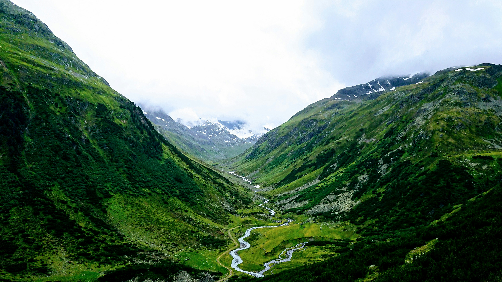

Ziro Valley
Discover the living cultural landscape of Ziro Valley, the ancestral home of the Apatani tribe and a UNESCO World Heritage nominee. The valley is a masterpiece of indigenous engineering, where lush terraced rice fields are meticulously integrated with fish farming in a sustainable system passed down through generations. Walking through traditional bamboo villages like Hong, one of Asia's largest, you witness a unique way of life centered on the worship of the Sun and Moon (Donyi-Polo). Known today for its world-famous Ziro Music Festival, the valley remains a soulful blend of ancient tribal wisdom and breathtaking natural splendor.